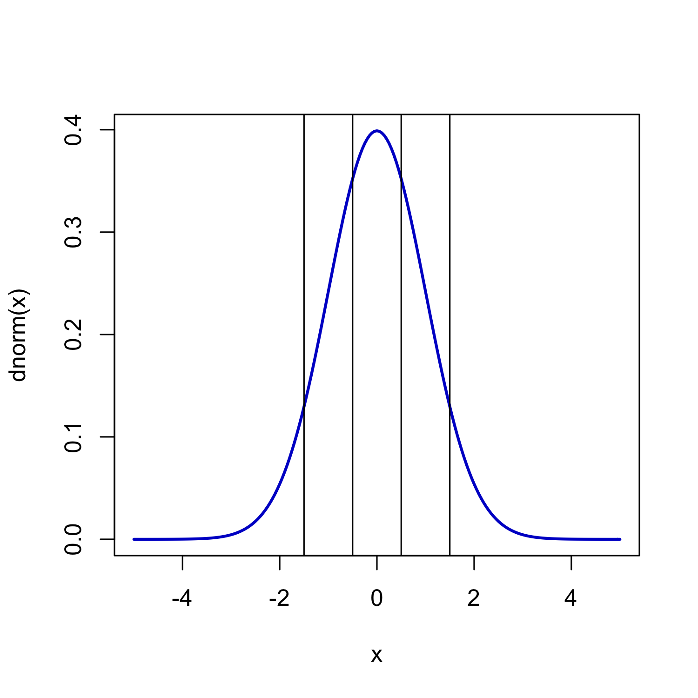
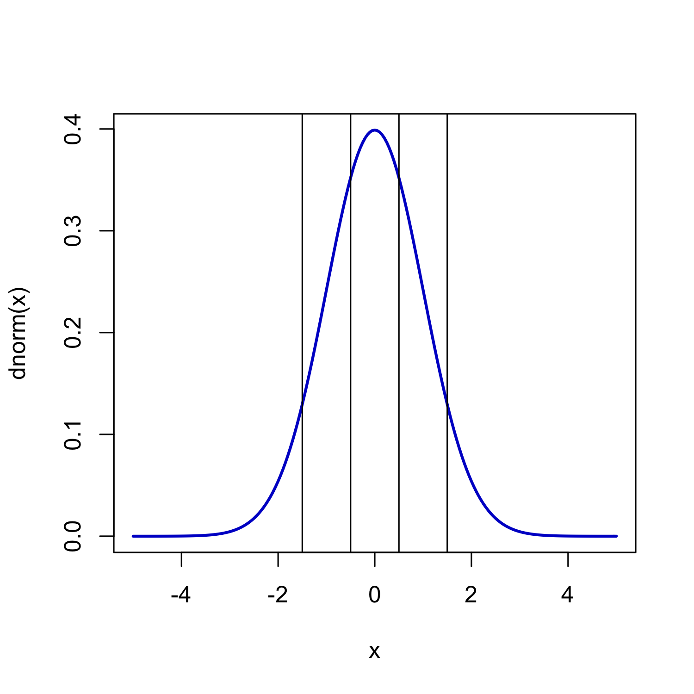

Use up and down arrow keys to navigate.
(Looks best in fullscreen mode!)
Assessing the Impact of Exclusive Extreme Response Style on Estimation of the Treatment Effect in Randomized Control Group Designs
Emily Mo
Faculty Advisor: Allen Gregg Harbaugh
Boston University Mathematics & Statistics
Faculty Advisor: Allen Gregg Harbaugh
Boston University Mathematics & Statistics
Definitions & Concepts
Manifest Item
Latent Variable
Treatment effect and its estimation
Tau cuts
Response Styles (more on that...)
 

What are Response Styles?
Different ways of translating one’s true response to a question into one of the options on the Likert scale
(For example: Exclusive Extreme, Extreme Avoiding)
Response styles can vary according to factors such as education level, personality, and cultural background.
(For example: Exclusive Extreme, Extreme Avoiding)
Response styles can vary according to factors such as education level, personality, and cultural background.
What are Response Styles?
Research Design
We simulated data to mimic a balanced research design in which data is obtained from responses on a pre- and post-intervention survey, and in which participants are randomly assigned to a treatment or control condition that is administered in between the two surveys.
In each simulation, we altered certain survey characteristics, such as the number of people who respond with a response style or the number of questions on the survey, while holding others constant. Our goal was to understand how variations in these survey characteristics impact the treatment effect estimate in the presence of a response style.
In each simulation, we altered certain survey characteristics, such as the number of people who respond with a response style or the number of questions on the survey, while holding others constant. Our goal was to understand how variations in these survey characteristics impact the treatment effect estimate in the presence of a response style.
Why Simulate?
(If your data is fake, aren’t your results fake?)
We want to compare the estimated treatment efficacy with the actual treatment efficacy, but we can never know a treatment’s true efficacy in real life. In our simulations, we model a survey design in which we predetermine the “actual” treatment efficacy and then obtain a statistical estimate of that efficacy in each simulation using structural equation modeling (SEM) so that we can compare the estimate with reality. That estimate is our response variable.
The survey data we generate is indeed fake. However, we are not interested in the survey data itself, but rather how our chosen experimental variables impact the SEM estimate of the treatment effect. This impact is very much real!
In short, simulations allow us to make comparisons that we can't make in the real world, and also allow us to manipulate our experimental variables of interest in many “parallel realities”, while controlling the exact variables that we want. This way, we can see where statistical estimation falls short.
Our Question
We defined a fixed moderate treatment effect size of (0.5), then ran 1000 simulations of each combination of the following experimental variables / controls:
- Number of items on pre- and post- surveys fixed at 15
- Number of respondents fixed at 250
- Presence of Exclusive Extreme response style (or "percent contamination") varying from:
- 0% to 39% in intervals of 3% for Likert scale granularities 4 to 7
- 0% to 60% in intervals of 3% for Likert scale granularity 11
- Likert scale granularity varying between 4, 5, 6, 7, and 11
- Skewness of the distributions of Likert-type responses, since a skew is more prominent in real life
Findings: Skewness and Percent Contamination
We found that when predicting treatment effect on data of different skew levels while using Exclusive Extreme percent contamination as a predictor, the negative influence of percent contamination on the treatment effect estimate increased as the absolute value of the skewness increased.
In other words, the deeper the skewness, the more likely structural equation modeling methods would suggest that that a treatment was dramatically weaker than it actually was, given increasingly higher presences of Exclusive Extreme response style.
In other words, the deeper the skewness, the more likely structural equation modeling methods would suggest that that a treatment was dramatically weaker than it actually was, given increasingly higher presences of Exclusive Extreme response style.
Findings: Skewness and Percent Contamination
The skewness was not found to have an impact on the standard error of the treatment effect estimate.
However, as the presence of the Exclusive Extreme response style increases, the standard error generally increases slightly as well.
Thus, as the response style increases in presence, the estimated treatment effect generally deviates in the negative direction from the actual treatment effect, but we also become increasingly uncertain of that estimate.
However, as the presence of the Exclusive Extreme response style increases, the standard error generally increases slightly as well.
Thus, as the response style increases in presence, the estimated treatment effect generally deviates in the negative direction from the actual treatment effect, but we also become increasingly uncertain of that estimate.
What we didn't find...
Any significant effect of granularity on treatment effect estimate / interaction with percent contamination and skewness levels
(Increasing the number of items on the Likert scale used on a survey does not seem to consistently distort the treatment effect estimate or impact how the Exclusive Extreme response style distorts the estimate.)
(Increasing the number of items on the Likert scale used on a survey does not seem to consistently distort the treatment effect estimate or impact how the Exclusive Extreme response style distorts the estimate.)
Next Questions
To what degree of confidence can we detect the Exclusive Extreme response style in surveys?
How can we adjust our margin of error in accordance with the detected level of Exclusive Extreme response style in the survey data?
How can we adjust our margin of error in accordance with the detected level of Exclusive Extreme response style in the survey data?